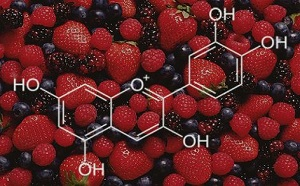

Anthocyanins zijn stoffen die kleur geven aan een plant. De kleur van antocyanins wordt beïnvloed door de PH, zuur heeft een oranje kleuren en een base heeft een paarse kleur. Antocyanins zorgen ook voor stress vermindering en de gevoeligheid voor foto-inhibitie via lichtdemping. Omdat antocyanins behoren tot flavonoiden en deze in elke organisme aanwezig zijn, wordt er gezocht naar elk gen dat te maken heeft met antocyanins. Zodat deze vergeleken en onderzocht kunnen worden. Er zijn 3 concrete vragen gesteld waarop een antwoord gevonden moet worden, deze vragen hebben allemaal te maken met de antocyanins. De vragen zijn welke gewassen antocyanins produceren onder stress en wat voor vorm van stress, welke genen zijn hierbij betrokken zijn en wat de beinvloed de productie van anthocyanins. Het doel is een tool ontwerpen en creeren die doormiddel van textmining antwoord kan geven op alle bovenstaande vragen.
De textmining logica wordt geschreven met Flask 1 , een micro web framework geschreven in Python.
Flask is een alternatief voor mod_python 2 , dat gekozen is omdat Flask geen overbodige functies heeft.
Flask is erg geschikt voor kleinere projecten en werkt buiten de basis functies met extensions die je
alleen download als je ze nodig hebt. Het idee achter de textmining is het doorzoeken van artikelen met
onderwerpen over anthocyanen en daarvan de benodigde informatie uit het artikel te halen en op te
slaan. Een strategie kan zijn door te kijken naar de overlap tussen een database met plantennamen en
opgeslagen artikelen die een vorm van het woord ‘Anthocyanin” bevatten.
Er is gekozen voor een web interface boven een downloadbaar programma om het feit dat een web
interface toegankelijker en sneller te gebruiken is dan een gedownload programma. Deze web interface
zal gebruik maken van HTML5, CSS3 en JavaScript. De webinterface zal gehost worden op
www.cytosine.nl, de server die ons is geleverd door de Hogeschool van Arnhem en Nijmegen. Deze
server gebruikt Apache 2.2.22 3 . De web interface zal een zoekfunctie hebben voor plantensoorten om
op te zoeken of deze planten anthocyanen produceren en welke genen in die plantensoorten betrokken
zijn bij anthocyanenproductie. Ook zal er een zoekfunctie zijn voor het opzoeken van genen en in welke
plantensoorten deze genen zich bevinden. Verder zal er nog een homepagina, contactpagina en
helppagina zijn.
Om de database op te zetten zal er eerst een ERD (Entity Relationship Diagram) ontworpen worden in
MySQL Workbench 4 omdat dit programma kosteloos is en wij er al ervaring mee hebben. In dit ERD
zullen de relaties tussen de tabellen en de benodigde data ontworpen worden. Dit ERD zal dan
geëxporteerd worden als SQL CREATE SCRIPT om op deze manier de code voor de database te
verkrijgen.

ANTHOdb
Een live textmining webapplicatie voor Anthocyaninen in plantensoorten
